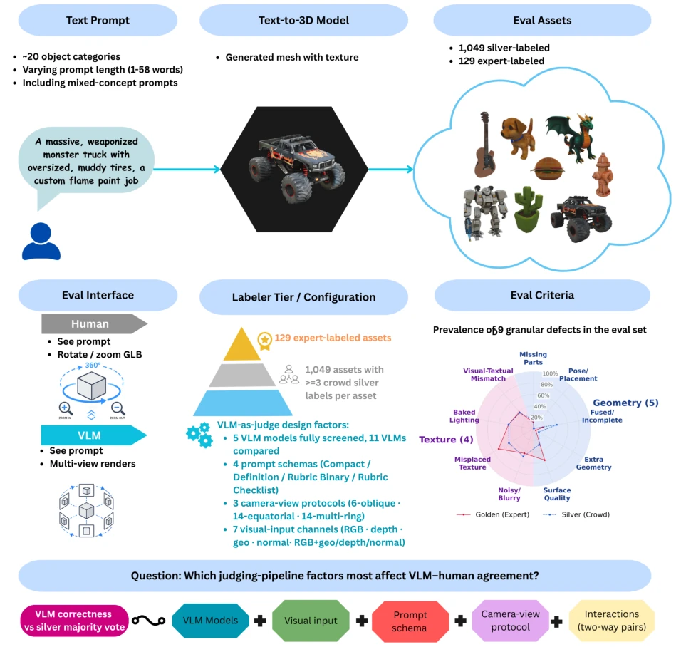
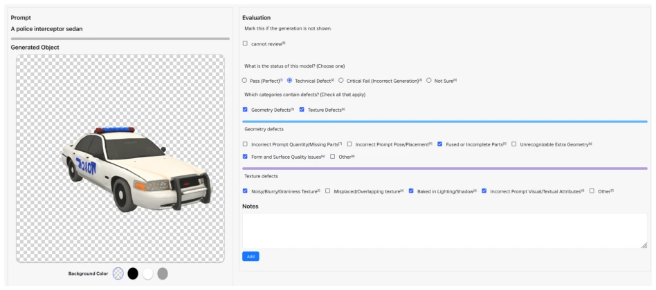
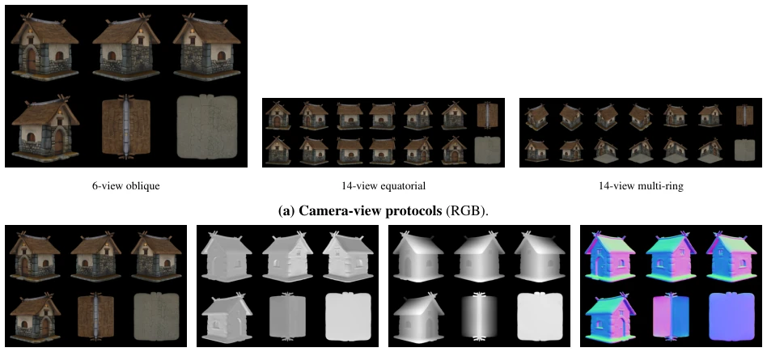
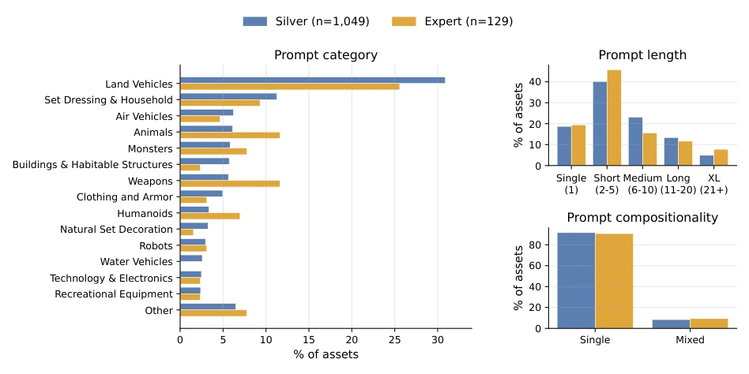
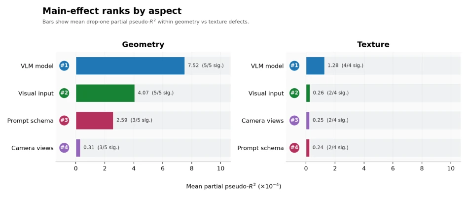
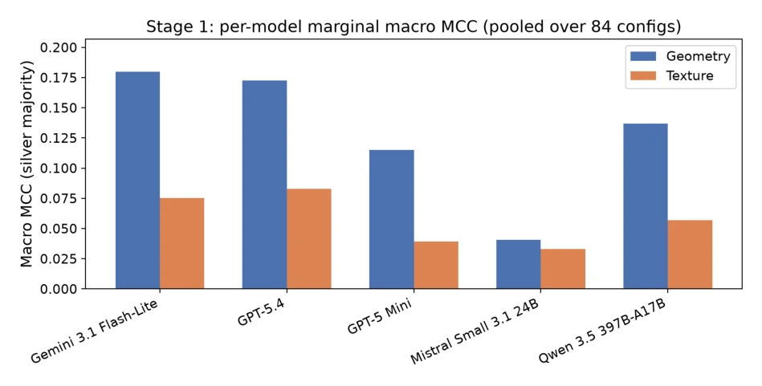
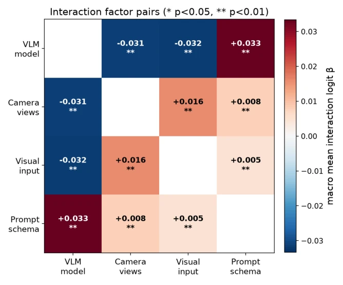
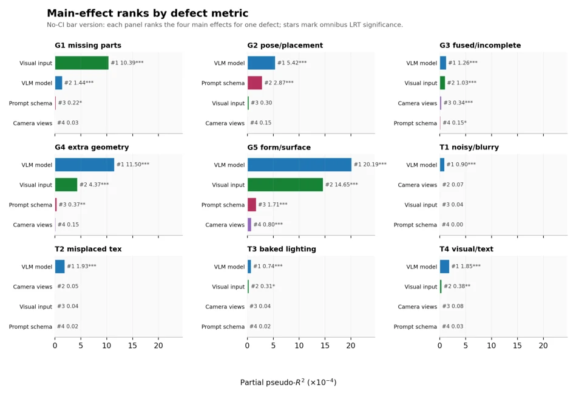
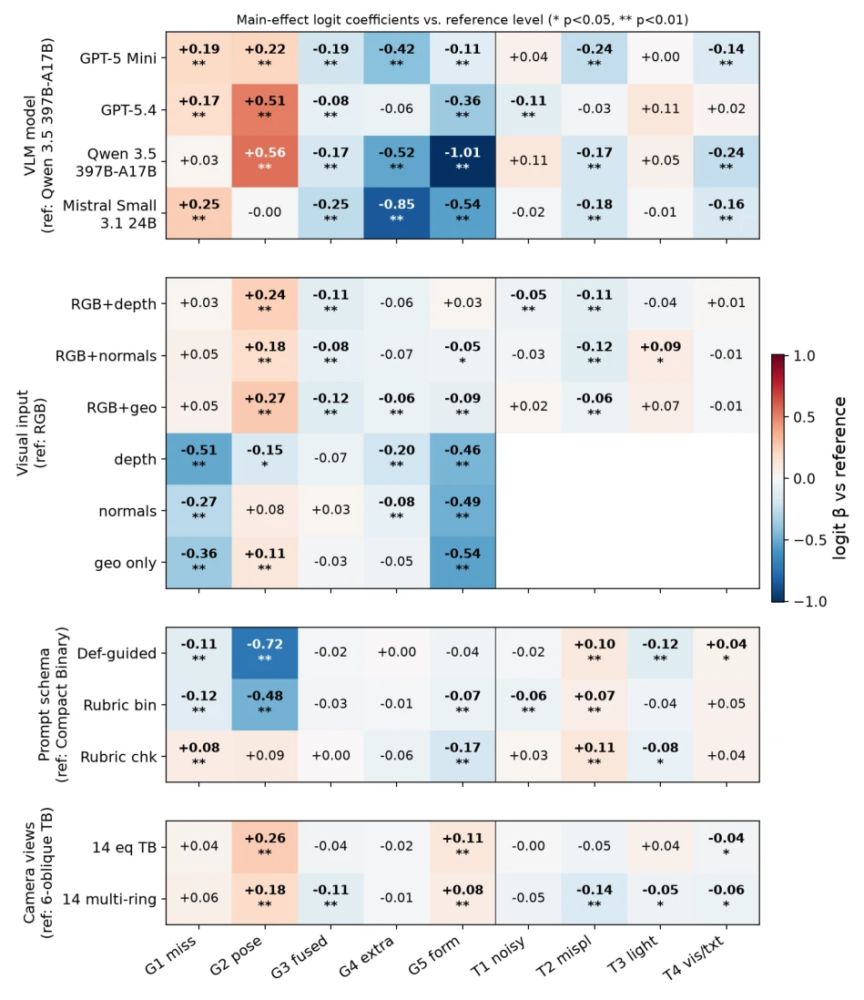
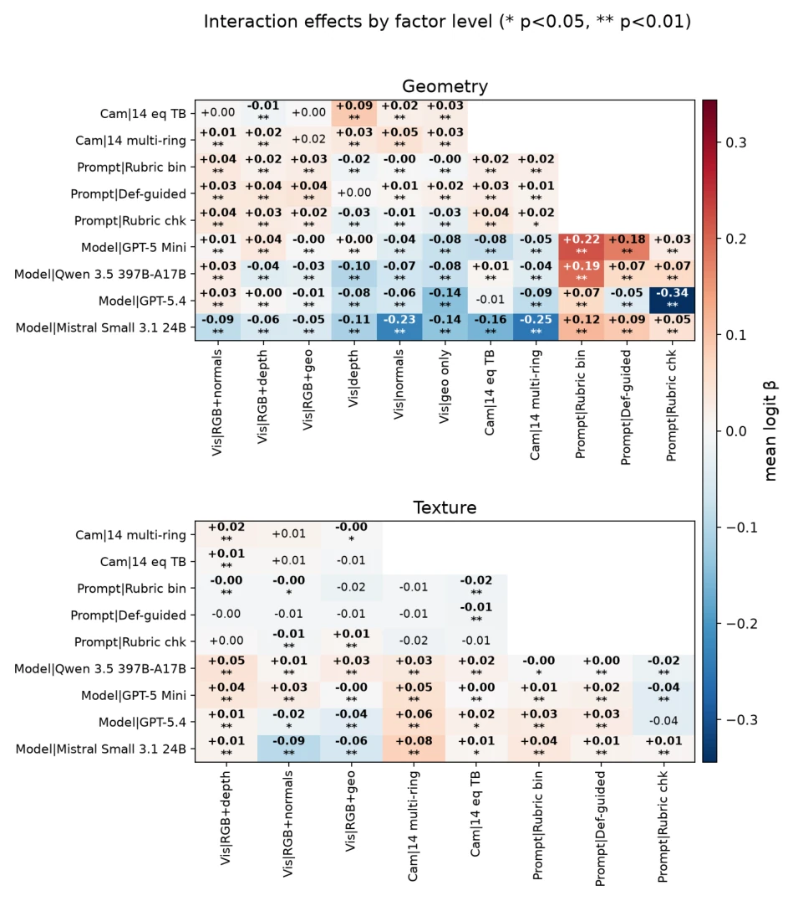

This paper finally punctures the "Emperor's New Clothes" of VLMs as 3D generation judges. Although the authors constructed a 3D-DefectBench and conducted a factorial study, appearing hardcore, the conclusion is actually somewhat "expected": the model itself is most important, followed by the rendering scheme. Most ironically, they experimented with 84 configurations and finally found that the cheapest 6-view RGB scheme suffices, while depth maps are purely a waste of tokens. Moreover, the evaluation of texture defects is simply a mess; there is a huge gap between expert annotations and crowd annotations, and VLMs basically guess on textures. However, viewing evaluation as a configurable measurement system rather than a simple model benchmark is indeed praiseworthy; at least in the future, when running experiments, one won't just blame the model's inadequacy but can also blame their own poorly written prompts. The cost-aware staged design also avoids computing power waste, saving money for future researchers, but the noise problem in texture evaluation remains unresolved, and future work may require more fine-grained annotation protocols.
研究动机Motivation
现有 3D 生成评估基准（如 GenAI-Bench [Li et al., 2024], Eval3D [Duggal et al., 2025]）多聚焦于生成器排名，将 VLM 裁判视为黑盒。它们忽略了评估流程本身（渲染、视角、提示词）对裁判一致性的影响。正如 Duggal et al. [2025] 和 Wu et al. [2024b] 的工作所示，现有方法常固定输入协议，导致模型能力与评估设置混淆。此外，Holistic ratings 无法定位具体缺陷（如 fused parts），难以指导模型改进。本文旨在解决这一测量问题，通过控制变量法分离模型能力与流水线因素，避免将评估误差归咎于模型本身。同时，引入专家与大众双标签体系，解决了单一参考标准带来的校准偏差问题，为自动化评估提供了更严谨的测量框架。
Existing 3D generation evaluation benchmarks (such as GenAI-Bench [Li et al., 2024], Eval3D [Duggal et al., 2025]) mostly focus on generator ranking, treating VLM judges as black boxes. They ignore the impact of the evaluation process itself (rendering, views, prompts) on judge consistency. As shown by the work of Duggal et al. [2025] and Wu et al. [2024b], existing methods often fix input protocols, leading to confusion between model capabilities and evaluation settings. Additionally, holistic ratings cannot locate specific defects (such as fused parts), making it difficult to guide model improvement. This paper aims to solve this measurement problem by using the method of controlling variables to separate model capabilities from pipeline factors, avoiding attributing evaluation errors to the model itself. Meanwhile, introducing a dual-label system of experts and crowds solves the calibration bias problem brought by a single reference standard, providing a more rigorous measurement framework for automated evaluation.
The core is 3D-DefectBench and a factor analysis framework. The dataset contains 1049 silver assets and 129 expert assets, annotating 9 types of fine-grained defects (5 geometry + 4 texture), such as fused parts and misplaced texture. Methodologically, the authors constructed 84 inference designs, cross-combining 3 camera protocols (6/14 views), 7 visual input channels (RGB/Depth/Normal), and 4 prompt schemas. A two-stage experiment is adopted: first, 5 cost-effective models are used to screen the best configuration (c004), then 12 state-of-the-art models are compared under fixed configurations. A defect-level logical factor model is used to quantify the main effects and interactions of each factor, with the formula logit Pr(ydi=1), using Macro MCC as the primary metric, and introducing expert and crowd reference label systems for calibration, ensuring evaluation results look not only at the model but also at system configuration. Additionally, confidence intervals are calculated through bootstrap clustering to verify the robustness of the design, ensuring the conclusions are reproducible.

Figure 1: Overview of 3D-DefectBench. Text prompts are converted into textured GLB meshes by two anonymized text-to-3D generator arms. Human reviewers inspect interactive meshes, whereas VLM judges receive rendered multi- view images together with the prompt. We treat the VLM judge as a configurable evaluation pipeline, systematically varying the judge model, camera protocol, visual input, and prompt schema through a balanced factorial design before evaluating frontier VLMs under a fixed near-optimal pipeline. Multiple annotations from trained vendor and expert labelers provide complementary reference-label regimes for calibration.

Figure 3: Interactive GLB labeling UI used for crowd and expert annotation. Labelers orbit, zoom, and toggle each defect category independently.

Figure 4: Visual evidence factors on one example asset (a stone cottage with a thatched roof). (a) The three camera- view protocols; (b) the four base visual-input channels rendered with the six-view oblique protocol. Each panel is the single grid image passed to the VLM.
Experiments conducted a full factorial scan on 1049 silver assets and a fixed configuration comparison on 12 VLMs. Results show that VLM model selection is the main source of difference, but visual input and prompts also have significant impacts. The key finding is: the RGB channel is crucial, adding depth or normal channels yields no significant gain; the 6-view RGB scheme has the highest cost-performance ratio. The Gemini series performed best, but texture evaluation fluctuated wildly between expert and crowd labels (MCC dropped from 0.406 to 0.160), indicating large noise in texture defect annotations. Additionally, there are interaction effects between models; the best configurations for different models vary slightly, but the overall trends are consistent. Confidence intervals were calculated through bootstrap clustering to verify the robustness of the design, proving that the impact of pipeline design on evaluation results cannot be ignored.

Figure 2: Prompt distribution across the silver and expert splits. Left: prompt category (the 14 largest categories by silver share; less-frequent categories are grouped into “Other”). Top-right: prompt length in words. Bottom-right: prompt compositionality (single- vs. mixed-concept). Both splits are dominated by short (2–5 word), single-concept prompts describing everyday game objects, with land vehicles the most common category; the silver and expert splits have closely matched distributions on all three axes.

Figure 5: Main-effect factor importance. Mean partial pseudo-R2 per factor family by aspect (main effects only, interaction block excluded). VLM model dominates, but visual input and prompt schema remain non-negligible.

Figure 7: Per-model marginal macro MCC pooled over all 84 inference designs.

Figure 9: Interaction strength by factor pair. Macro-mean interaction logit β per factor pair (*/**: bootstrap p<0.05/0.01). Model-involving pairs dominate.
其他图片Other Figures

Figure 6: Per-defect factor-family importance. Partial pseudo-R2 per defect (main effects only); the family ordering (VLM model ≫visual input, prompt schema, camera protocol) holds for most individual defects rather than being an artifact of macro-averaging.

Figure 8: Main-effect logit coefficients from Eq. (1), per factor family (rows) and defect (columns; G1–G5 geometry, T1–T4 texture). Positive (red) values increase agreement vs. the reference level; */** mark bootstrap significance at p<0.05/0.01. VLM-model reference is Qwen 3.5 397B-A17B.

Figure 10: Level×level interaction coefficients for geometry (top) and texture (bottom): lower-triangle mean interaction logit β (*/**: bootstrap p<0.05/0.01). Model-involving level pairs carry the strongest interactions.